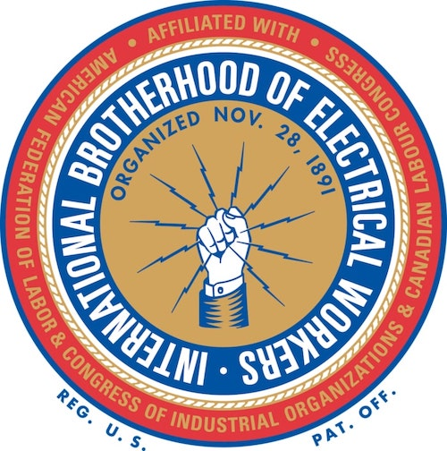

---
# Empty YAML front matter for page to be processed by Jekyll
---

<!DOCTYPE html>
<html>
  <head>
    <link href="./Style Sheets/style.css" type="text/css" rel="stylesheet">
    <link href="https://fonts.googleapis.com/css2?family=Fira+Sans:ital,wght@0,300;0,600;1,300;1,600&display=swap" rel="stylesheet">
    <meta name="viewport" content="width=device-width">
    <script src="./Scripts/onload.js"></script>
    <title>Coalition Partners | Public Internet NYC</title>
  </head>

  <body>
    {% include header.html %}

    <div class="margins">
      <h1 class="center">We are a growing coalition of organizations fighting for municipal broadband in New York City.</h1>

      <a href="https://techaction.nyc"></a>
      <a href="https://local3ibew.org"></a>
    </div>

  </body>
</html>
